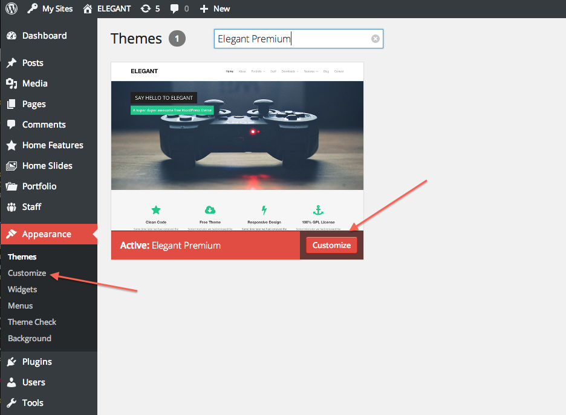
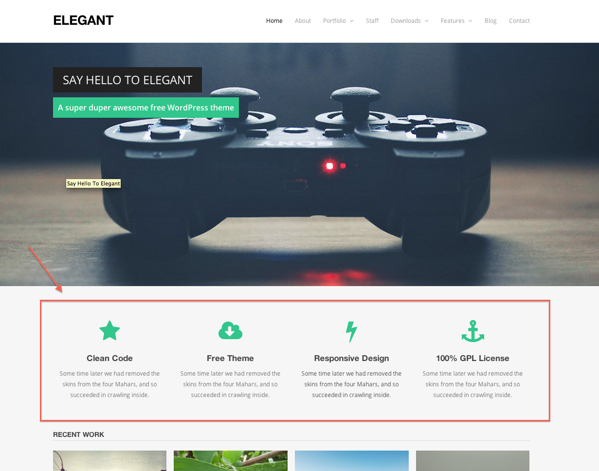
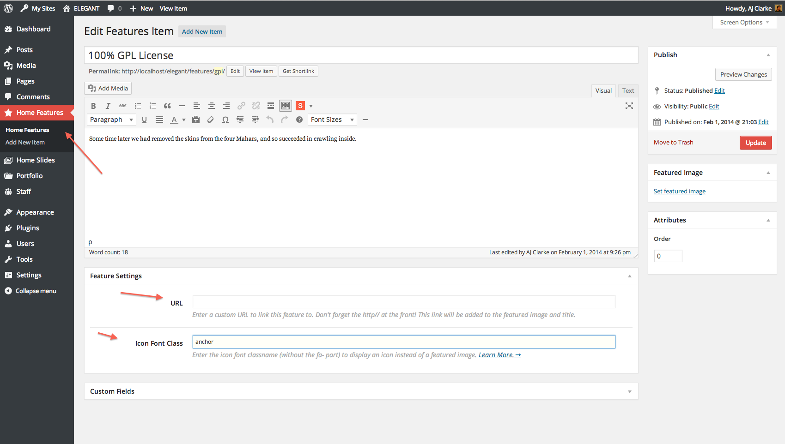
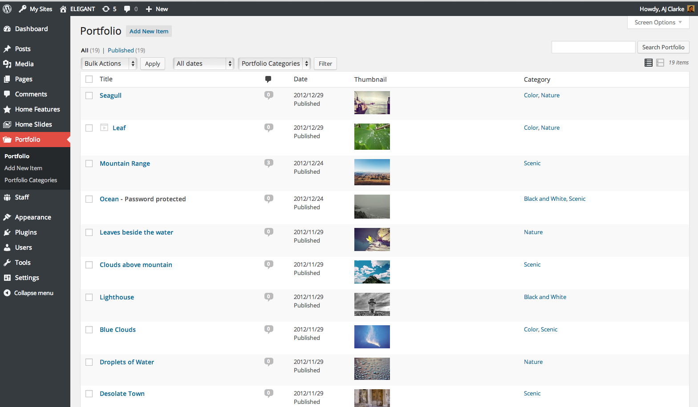
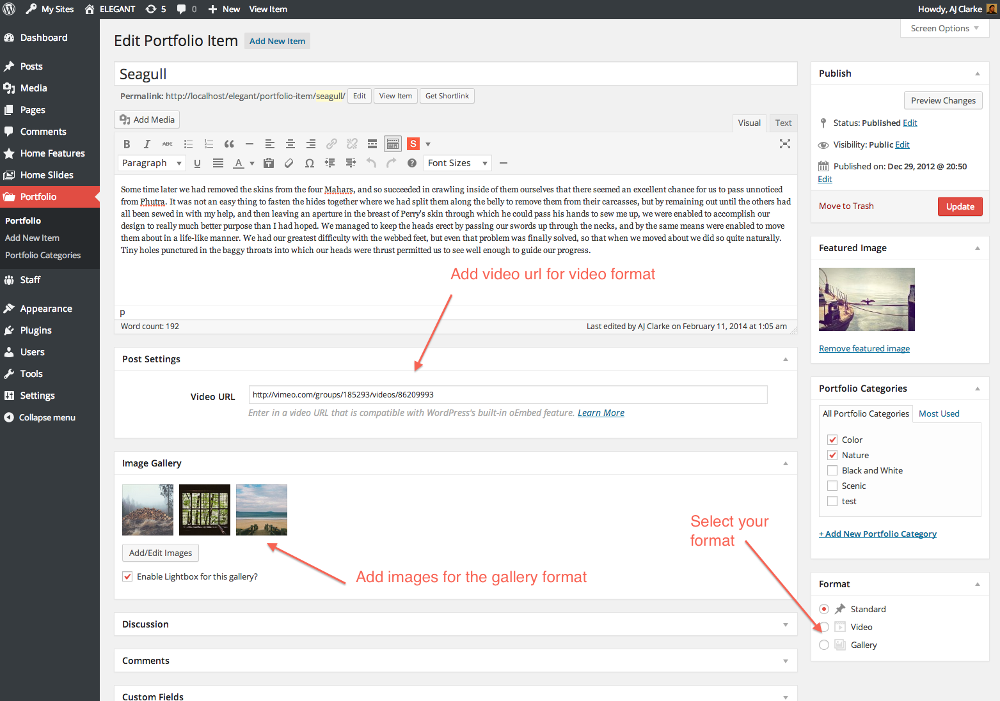
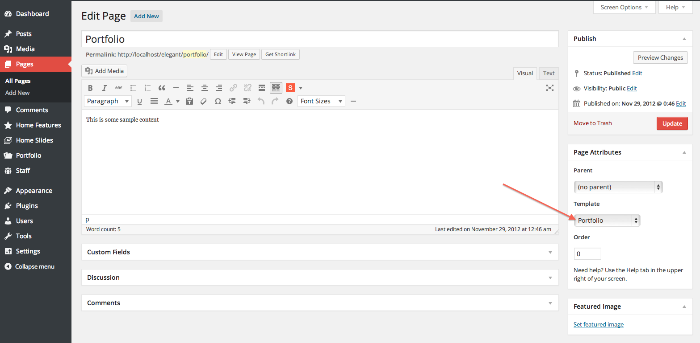
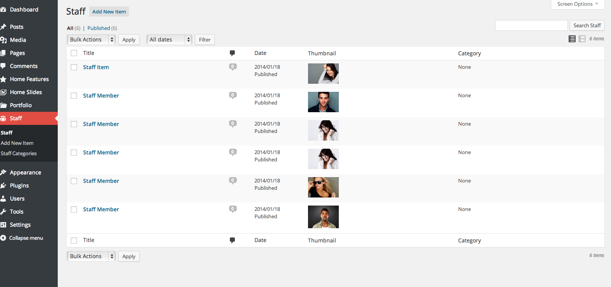
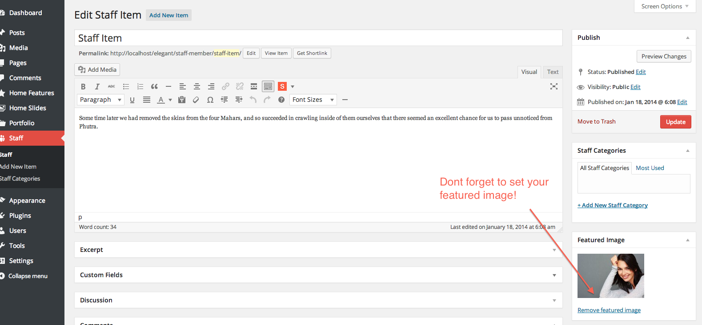
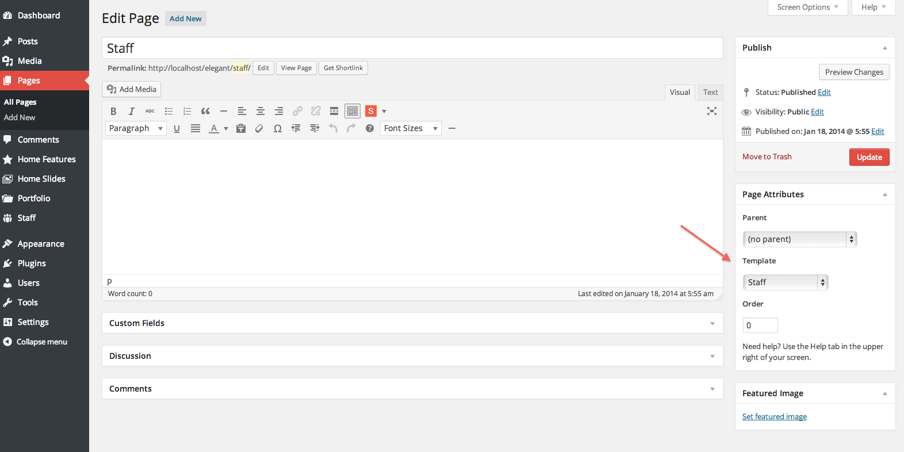

Elegant WordPress Theme
Thank you for the purchase. We hope you love our theme!If you find any bugs with this theme get in touch with a clear description of the problem so we can fix it. However we do not support modifications such as: changing the appearance or functionality of the theme.
Requirements
The following things are required to run this product:
- PHP 5+
- MySQL 5+
- GD Library
- Self-Hosted WordPress
- Legal theme download
- Experience using WordPress functions
Recommended
This theme supports the following external plugins to provide functionality:
Index
- Installation
- Sample Data (Dummy Content)
- Theme Options
- Homepage Setup
- Homepage Features
- Portfolio Setup
- Staff Setup
- Contact
- Shortcodes
- FAQ
Installation
You'll want to install this theme just like any other WordPress theme, either by uploading the main theme folder via FTP (unzipped) or the zipped file via the Wordpress theme upload section. Make sure you located the main theme folder from the downloaded zip file and that you are not uploading the entire zip with all the documentation, sample data, etc. Watch the
1. Uploading The Theme
a. FTP Method
- Log into your site via FTP
- Browse to your folder located at wp-content/themes
- Unzip the wpex-elegant-premium.zip folder and upload only the extracted delta folder to your server
- Log Into Wordpress and go to Appearance → Themes
- Find the theme and click to activate

b. WordPress Method
- Log into WordPress
- Browse to Appearance →Themes
- Click to "add new" and then follow the instructions on the screen
- When it asks to select a file find the zipped wpex-elegant-premium.zip file you purchased.
Sample Data
- Sample Data isn't automatically added to your site, for most people this wouldn't be beneficial, instead there are specific files included to import sample data.
- Extract the wpex-elegant-premium.zip and you can find the sample Data file which is located in the sample-data folder and is called sample-data.xml
- To upload your WordPress sample data, log into your WP install and browse to Tools->Import and follow the instructions.
- After the import is complete you should have all the posts/pages from the demo with dummy images.
- There are certain things a WordPress import can not do, so after uploading sample data:
- Go to Appearance->Menu to set your menu locations.
- Go to Appearance->Widgets to add your widgets (widgets aren’t included in a WordPress export)
- Go to Appearance->Customize to customize your theme
Theme Options
This theme makes use of the WordPress Theme Customizer for all your theme options! Simply go to Apperance->Customize and you'll find all the theme options there.
{kind=link}
{kind=link}
{kind=link}
{kind=link}
{kind=link}
Homepage Features
The homepage has a "features" section which uses the custom post type "Home Features" in the theme panel - this adds icons to the homepage.
{kind=link}
To add these simply add them as posts under the custom post type - it's very easy! Add your title, content, give it a url(optional) and an icon (optional)
{kind=link}
Portfolio Setup
This theme includes a custom post type for your portfolio items. Use this area to add all your portfolio items
{kind=link}
Adding Items is very easy (just like standard posts). Have a look at the screenshot below - click to enlarge.
{kind=link}
To create a main portfolio page that display's all your items simple create a new page and select the portfolio template
{kind=link}
Staff Setup
This theme includes a custom post type for your staff items. Use this area to add all your staff members
{kind=link}
Adding Items is very easy (just like standard posts). Have a look at the screenshot below - click to enlarge.
{kind=link}
To create a main staff page that display's all your items simple create a new page and select the staff template
{kind=link}
Contact Page
Contact forms are not built into a theme (for many reasons) so we recommend using a 3rd party plugin for this. The free one we like is Contact Form 7 and the premium one we like is Gravity Forms both can be used to add forms anywhere on your site! We won't support the plugins, but they are the ones we recommend.
Shortcodes
This theme doesn't include shortcodes built-in because it's not a good habit to do so. We've created a plugin though which you can use and it's totally free. The plugin is called Symple Shortcodes.
When you activate your theme you should see a notice at the top to automatically activate the plugin. Once the plugin is installed and active you will see a new icon in your editor which you can use to insert your shortcodes